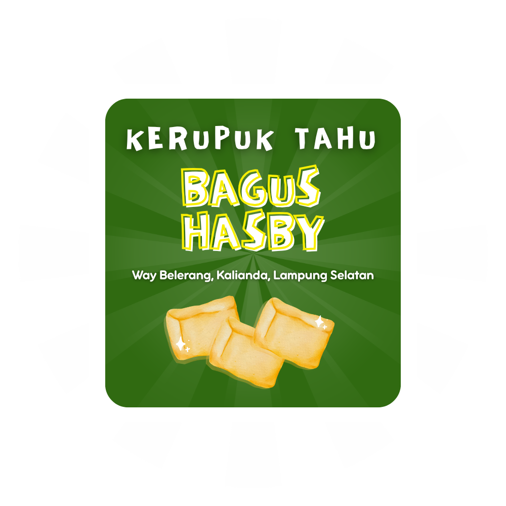
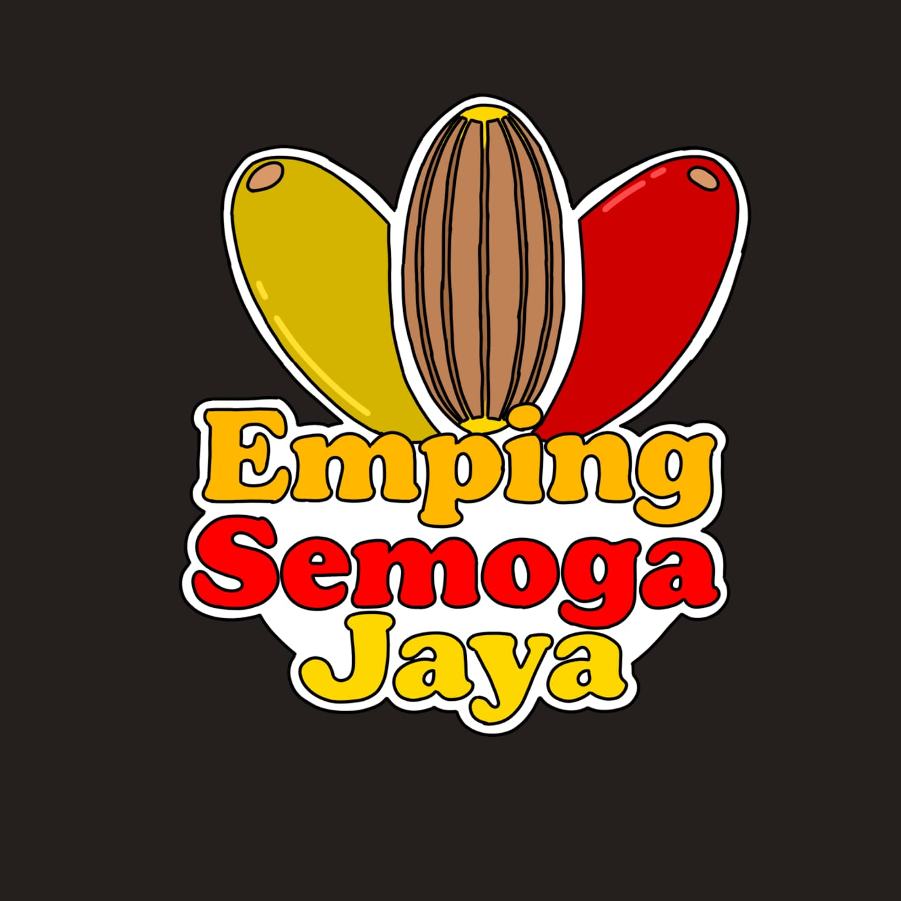
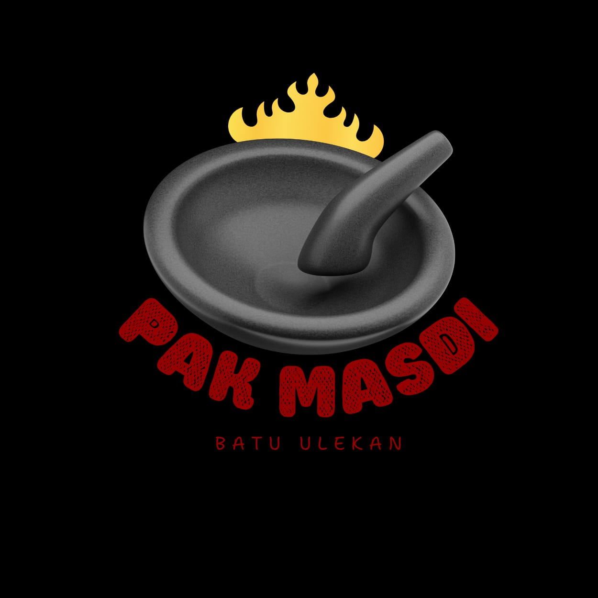
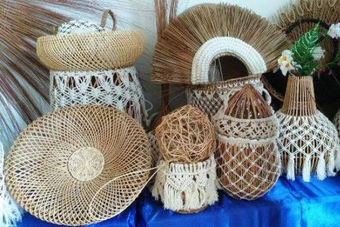
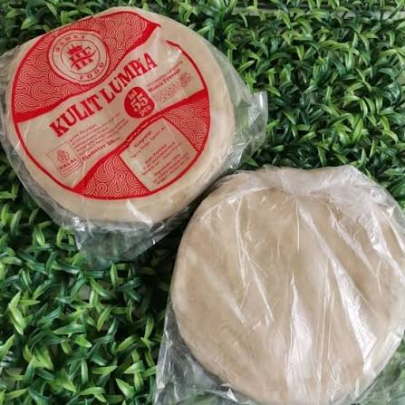

Etalase Desa
Produk Lokal Buah Berak
Pilih salah satu UMKM untuk melihat profil usaha, informasi pemilik, kontak, dan galeri produk.

01Kuliner
Kerupuk Tahu Bagus Hasby
Kerupuk tahu khas UMKM Desa Buah Berak.
Lihat Profil UMKM →
02Kuliner
Emping Semoga Jaya
Produk emping melinjo dari pelaku usaha lokal.
Lihat Profil UMKM →
03Kerajinan
Batu Ulekan Masdi
Peralatan dapur berbahan batu untuk kebutuhan rumah tangga.
Lihat Profil UMKM →
04Kerajinan
Anyaman Lidi
Kerajinan anyaman berbahan lidi karya masyarakat desa.
Lihat Profil UMKM →
05Kuliner
Kulit Lumpia Erlangga
Kulit lumpia untuk kebutuhan rumah tangga dan usaha kuliner.
Lihat Profil UMKM →i
Informasi pemilik, alamat, nomor WhatsApp, dan foto produk dapat diperbarui oleh admin desa sesuai data UMKM terbaru.